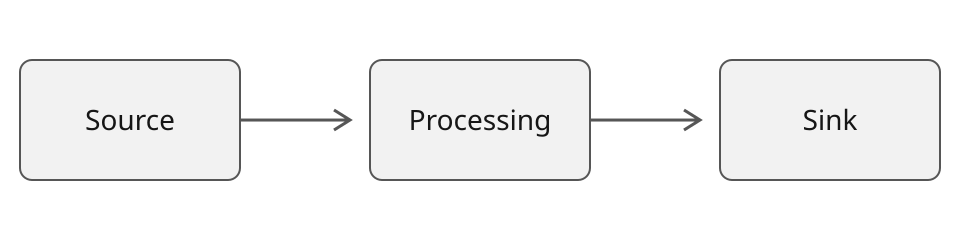

Deck components
Every slide type the deck runtime styles, with the markup each one expects.
Component reference; all scenarios are illustrative.
Slide types
Title, section, content, and closing.
Arrow list with fragments
Each item appears on its own advance.
- Fragments keep the room with you instead of ahead of you.
- Advancing past the last fragment moves to the next slide.
- Going back re-hides them one at a time.
Fragments are dimmed rather than removed, so nothing shifts position.
Two columns
Before
- Manual deployment from a workstation.
- Configuration lives in a wiki page.
- Rollback is a phone call.
After
- Pipeline deployment from a signed artifact.
- Configuration lives in the repository.
- Rollback is a pipeline stage.
Summary grid
Two to six labelled takeaways.
Latency
Median request time drops once the cold start is removed.
Cost
Steady state is cheaper; the migration window is not.
Risk
The rollback path must be rehearsed before the cutover.
Effort
Most of the work is in configuration, not in code.
Sequence
- Virtual machinesFull control, full responsibility.
- ContainersPortable units, orchestrated.
- Managed platformOperations absorbed.
Steps
Provision
Create the resource group and the workload identity.
Deploy
Push the image and roll out the first revision.
Code
Short, projected, and readable from the back row.
bash
az containerapp up \
--name demo \
--resource-group rg-demo \
--source .Figure

Callout: rule
Callout: warning
The label conveys risk; the accent stays consistent.
Callout: source
The constraint was never the platform. It was the deployment path. Fictional quotation for this component example
Table
| Option | Control | Operational load |
|---|---|---|
| Virtual machines | Full | High |
| Container apps | Application level | Low |
| Functions | Function level | Lowest |
Make one point.
Leave room to think.